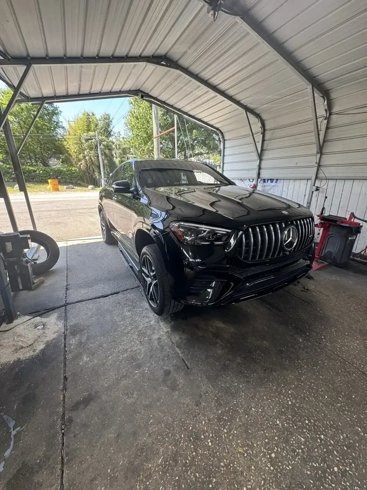

Tires
One patch or four new tires. New and used.
- Tire patches
- Tire replacement
- Mounting and balancing
Auto & tire repair · Sligh Ave, Tampa
Patches or four new tires, fair prices, and you're out the door fast.
4.6247 Google reviews

Family owned
Around the shop




What we do
New and used tires, tire patches and general repair on W Sligh Ave.
One patch or four new tires. New and used.
General repair work done in the covered bays by the crew.
Sit inside in the seating area or wait outside, music on and the shop dog nearby.
Google reviews
4.6247 Google reviews
“I’ve been coming here for years. They are always affordable, efficient and friendly. Whether I need a tire patch or all 4 replaced, I’m coming to Jordy and his guys at Continental.”
“Continental is my favorite place for anything tire related. They are fast, friendly, & offer competitive pricing. At Continental you're not just a customer, you're family. Excellent customer service is what sets these guys apart from the rest! Thanks for all you do! My loyalty lies with Continental!!”
“I got four new tires for a great price, and was in and out in a half hour. Extremely friendly customer service and an adorable dog!”
Who we are
Family owned, run by a husband and wife. Friendly, honest and easygoing.
A seating area inside, a spot to wait outside, music all day and a friendly shop dog.

Find us
5709 W Sligh Ave, Tampa, FL 33634
Pull in under the carports. Wait inside in the seating area or outside with the music.